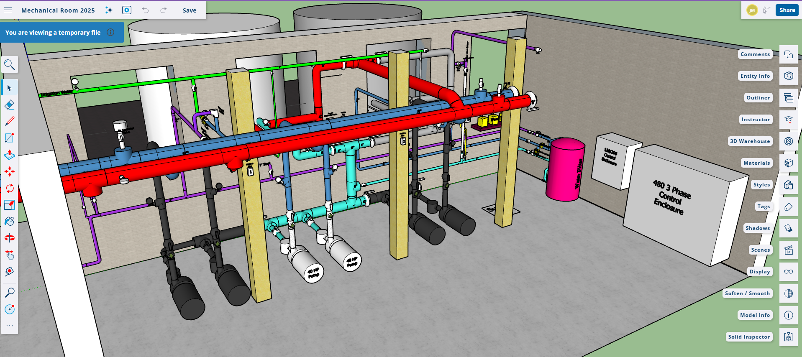
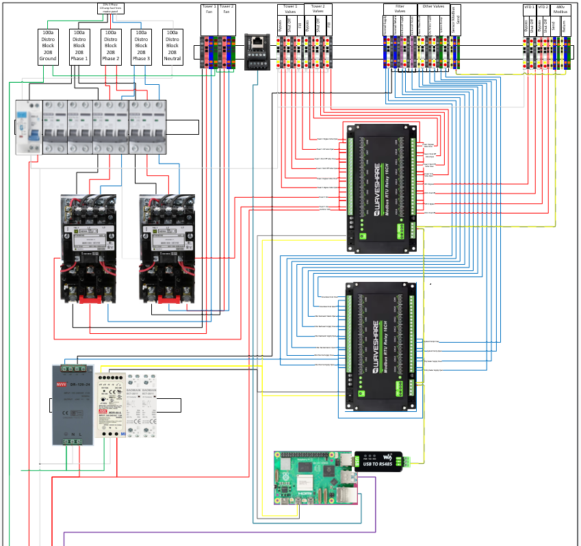
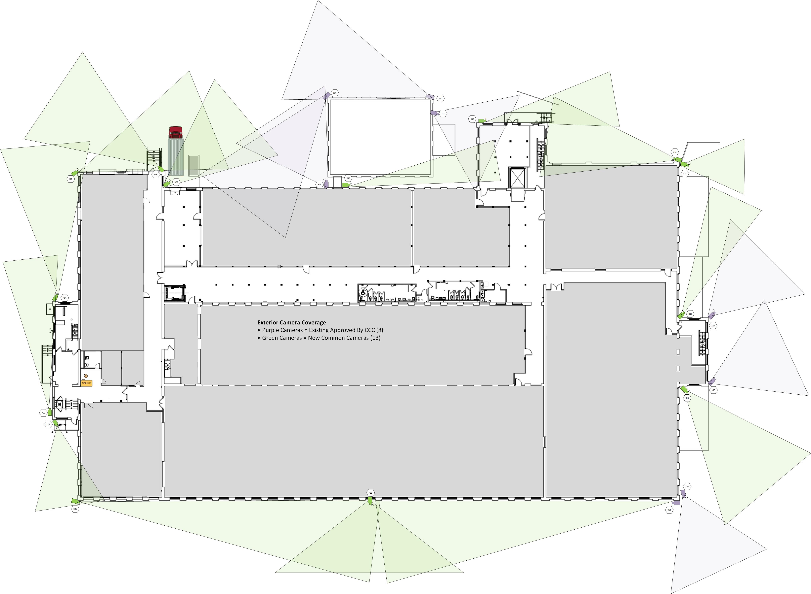
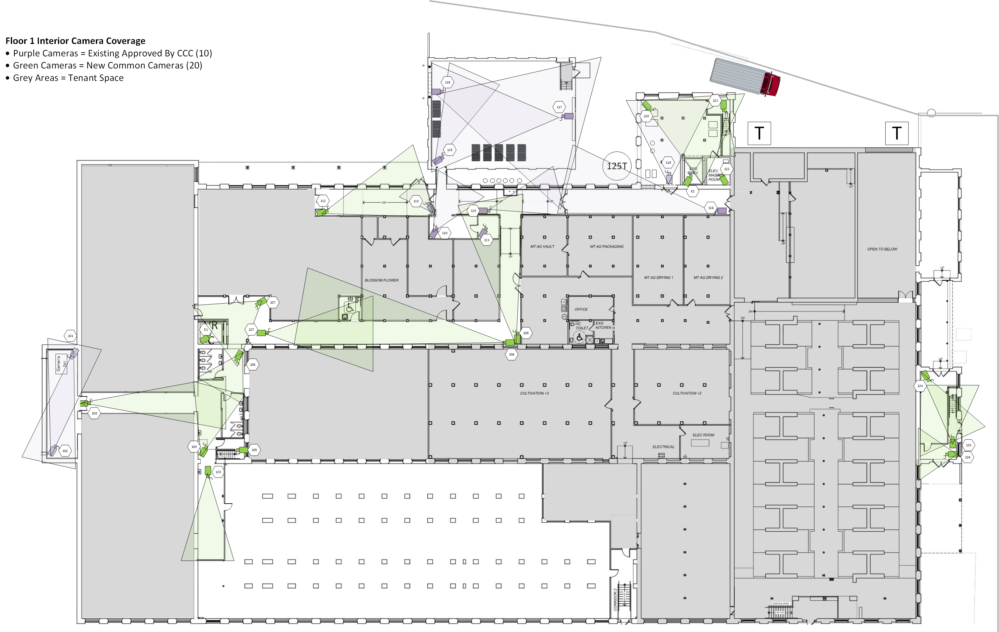

Full campus technology stack for a 240,000 sq ft multi-tenant commercial and light manufacturing facility — a brick former papermill built in the 1890s.
One partner across agentic transformation, HVAC, security, power, and IT. Five co-located tenants run daily operations on the systems we designed and built.
The five businesses inside the building run their daily work on a mix of regulated tracking systems, traditional accounting, supply chain software, customer-facing storefronts, and industry-specific tools. Agents tie those systems together and absorb administrative work that previously took human time.
Across the board, agents reduce administrative load, optimize operations, surface opportunities, and lower risk.
A 250-ton water-source heat pump system with full energy recycling for both heating and cooling loads. Heat removed from a tenant space that needs cooling is captured in the building's water loop and delivered, in the same moment, to a tenant space that needs heating. Under typical occupancy the building does not buy much net thermal energy at all — it moves what it already has.
Mechanical and electrical design, hardware specification, and project management of the building-wide HVAC plant serving the general building and all five tenants. Designed, built, installed, and wired in partnership with our plumbing and electrical trades, with us as the integrator from the first sketch through commissioning.
We specified the control hardware, drew the wiring, and built the panel. Industrial breakers and contactors on the power side; I/O modules addressing the sensor and actuator network; a Raspberry-Pi-based supervisor bridged to the rest over RS-485. The supervisor hosts the agentic control software directly. The agents handle several distinct jobs:
This past winter a plumber working on the gas lines accidentally shut off the gas to the boilers. No one noticed for the entire heating season — the system never called on it.


Before a single camera was installed we produced coverage plans at floor-by-floor and exterior scale. Each camera's field of view was laid out over the architectural drawings so every corridor, entrance, loading dock, and shared space had intentional coverage — and so the gaps were visible and deliberate, not accidental.
The system combines new common-area cameras with the existing cameras already approved for the site. Same recording infrastructure; same review console; one archive.
The recording stack runs on enterprise server infrastructure — a Dell server with redundant power and CPU, 100 TB of RAID 5+1 storage, Windows Server on Hyper-V, and Blue Iris as the recording engine with open-source integrations where useful. No NVRs — those fail in exactly the moment you need them.
The architecture scales to over 500 cameras with 90 days of full retention; today it runs over 200, covering every tenant in the building.
Chat-based agents manage the system, provision new equipment, and find and extract video using cross-referenced data and facial recognition. Finding the exact clips you need on a system with hundreds of cameras running 24/7 with 90-day retention is a large task — nearly effortless with agents.



Eighteen access control panels covering seventy-two doors across the campus, with card-based entry, tenant-specific profiles, audit logging, and integration with the camera feeds. Tenants administer access for their own spaces; common areas and shared infrastructure are administered centrally.
Chat-based agents handle general system management. Closed access-control software systems from different vendors are integrated together by agentic control of their interfaces — when a tenant removes a user from their own access-control system, that user's access to the general building is automatically revoked.
Five different security systems from several manufacturers, designed and installed to work together — intrusion, life-safety, environmental, perimeter, and tenant-specific systems. Coordinated on a shared monitoring and response backbone so the building has one operational view across all of them.
Building-wide WiFi and internet access for the general building and all five tenants. Campus-wide managed switching, structured cabling, routers and firewalls, tenant segmentation, and shared metered internet egress. Three data rooms with core services, tenant-shared and tenant-isolated compute, monitoring, and backup.
Chat-based agents handle all configuration and management of the system, lowering the administrative burden to simple chat requests and automating system updates.
The campus has three data rooms, each with its own UPS. Behind those UPSes is a battery inverter and a standby generator, coordinated so that — from the servers' perspective — the site never loses power. UPS carries the cutover; batteries take over from the UPS; the generator takes over from the batteries as it comes online.
The system we inherited ran IT infrastructure and emergency lighting off a single shared backup chain. That arrangement is fragile — a fault in one load can compromise the other — and it does not meet life-safety code, which requires emergency lighting on a dedicated, independently-protected system. We redesigned it as two fully split systems, each correctly engineered for its role.